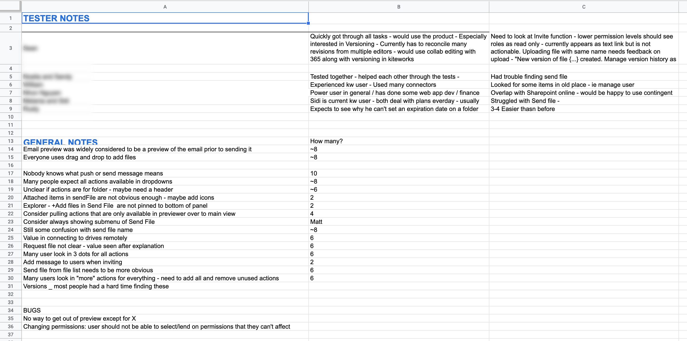
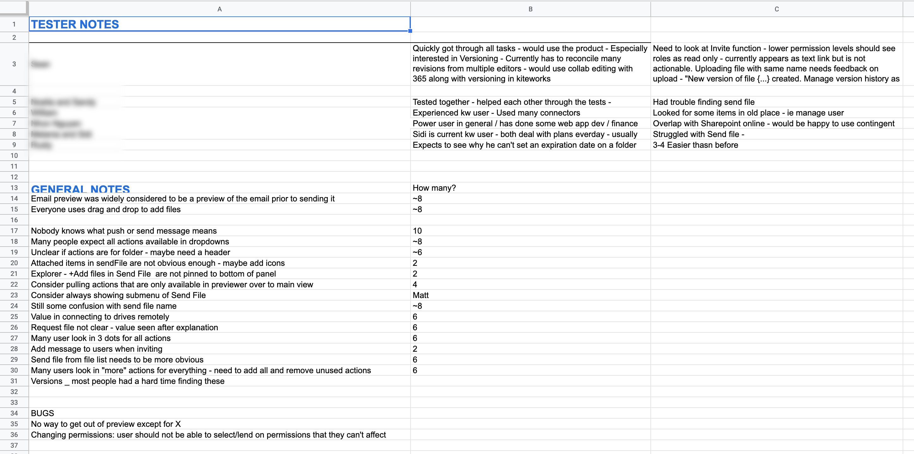

User Testing
While at Accellion I lead a week-long user research project with a key city government customer. Each day I met with employees from various departments within the city: planning, police, fire, business development, IT and more. The individuals I met with had varying levels of experience using the product, from zero experience to power users. The goal of the project was to understand the behaviors and needs of a representative customer to improve the product for all customers and inform product design decisions going forward. The sessions took place in the users own environment and context to learn how they are using the product and where they are having issues. Sessions started with a casual interview followed by observation of the users going through a series of common tasks. The project revealed a wealth of issues that would not have been discovered without this deep level of testing.
Next → 
